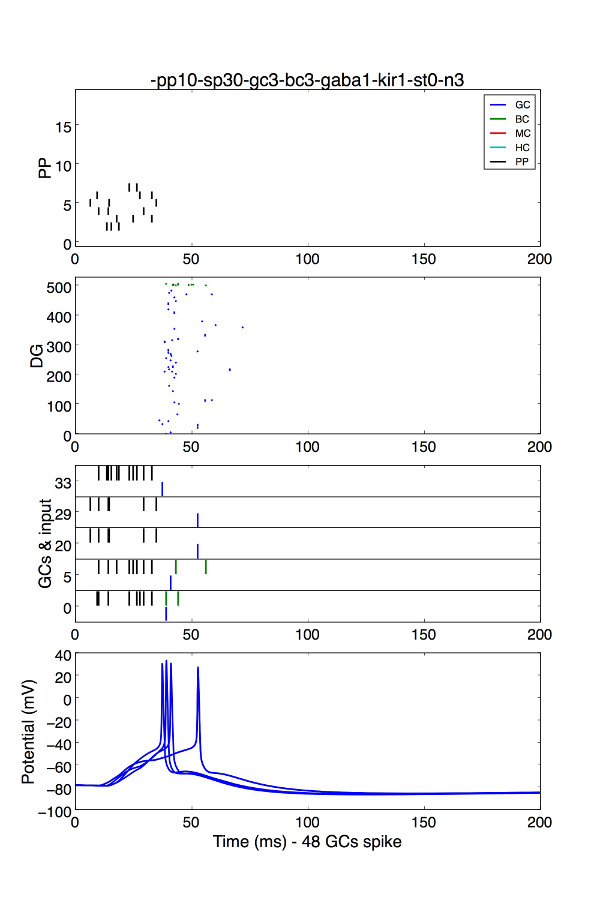
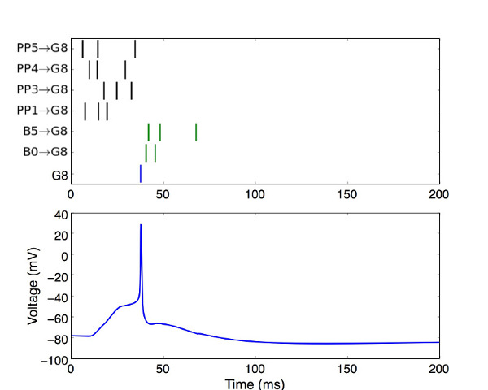
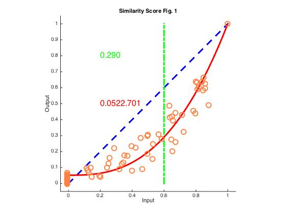

Yim MY, Hanuschkin A, Wolfart J (2015) Intrinsic rescaling of granule cells restores pattern separation ability of a dentate gyrus network model during epileptic hyperexcitability. Hippocampus 25:297-308.
http://onlinelibrary.wiley.com/doi/10.1002/hipo.22373/abstract
Dr. Man Yi Yim / 2015
Dr. Alexander Hanuschkin / 2011
1. Compile the mod files using the command
> nrnivmodl
2. Run the simulation (select the figure you want to simulate by setting fig in main.hoc before running)
> ./x86_64/special main.hoc
if your computer is running the 64-bit version, or
> ./i686/special main.hoc
for the 32-bit.
3. Open ipython or other command cells for Python, and run the data analysis
> ipython
> run fig1.py
Alternatively, you can set the idname of the following python codes and run the codes separately.
a) To plot the network activity in a trial (e.g. Fig 1C,D), run the python code plot_DG_all.py

b) To plot the activity of a neuron (e.g. Fig 1B), run the python code GCinput.py

c) To plot the network input and GC output (Fig 1E), run the python code inout_pattern.py
4. To make a scatter plot of similarity scores and fit the data (Fig 1E) , run the python code sim_score.py and then the matlab code FitSimScore_ForallFigs.m

Main code: run this code for the simulation
main.hoc
Printing code: format of the file output
printfile.hoc
Neuron models: morphology, conductances, ion channels and neuronal properties
GC.hoc
BC.hoc
MC.hoc
HIPP.hoc
Input models: properties of the inputs
PP.hoc
ranstream.hoc
Conductances: dynamics and properties of conductances
BK.mod
CaL.mod
CaN.mod
CaT.mod
ccanl.mod
HCN.mod
ichan2.mod
Ka.mod
Kir.mod
SK.mod
Spike generators:
netstimbox.mod
netstim125.mod
Python-Matlab-Analysis:
FitSimScore_ForallFigs.m fits the sim score data points by the method of least
squares.
plot_DG_all.py plots DG neurons' activity.
GCinput.py extracts and plots the inputs to a selected GC.
inout_pattern.py plots the inputs and GC outputs.
sim_score.py creates a scatter plot of output vs input sim scores.
In our scripts, the previously existing different potassium equilibrium potentials (Ekf, Eks, Ek..) were reduced to a single common Ek (e.g. GC.hoc, ichan2.mod, ....)).
CaL.mod
CaN.mod
CaT.mod
These are new mod files for L-, N- and T-type calcium channels written by A. Hanuschkin following the description in Ca ion & L/T/N-Ca channels model of
Aradi I, Holmes WR (1999) J Comput Neurosci 6:215-35.
Note that eCa is calculated during simulation by ccanl.mod (see below). ecat, ecal values set in Santhakumar are not used in our model scripts.
ccanl.mod
Warning by Ted Carnevale 2015:
The expression that this mechanism uses to calculate the contribution of ica to the rate of change of calcium concentration in the shell is
-ica*(1e7)/(depth*FARADAY)
but it should really be
-ica*(1e7)/(depth*2*FARADAY)
because the valence of ca is 2. The result of this omission is that the mechanism behaves as if the shell is only 1/2 as thick as the value specified by the depth parameter.
ichan2.mod
- added a tonic (leak) GABAA conductance to be modified during epilepsy (see Young CC, Stegen M, Bernard R, Muller M, Bischofberger J, Veh RW, Haas CA, Wolfart J (2009) J Physiol 587:4213-4233
http://onlinelibrary.wiley.com/doi/10.1113/jphysiol.2009.170746/abstract)
Kir.mod
New Mod file
Added an inward rectifier potassium conductance to be modied during epilepsy (see Young CC, Stegen M, Bernard R, Muller M, Bischofberger J, Veh RW, Haas CA, Wolfart J (2009) J Physiol 587:4213-4233)
Channel description and parameters from:
Stegen M, Kirchheim F, Hanuschkin A, Staszewski O, Veh R, and Wolfart J. Cerebral Cortex, 22:9, 2087-2101, 2012.
http://cercor.oxfordjournals.org/content/22/9/2087.long
SK.mod
Correction: use of correct dynamics (see rate() lines: 95-101)
BK.mod
Please note that cai was not assiged here in the original Santhakumar et al. (2005) version (which we used). It should be cai = ncai + lcai + tcai, as noted by
Morgan RJ, Santhakumar V, Soltesz I (2007) Prog Brain Res 163:639-58
The bug was fixed to make the channel properly dependent on the current calcium concentration. See
https://senselab.med.yale.edu/modeldb/showModel.cshtml?model=124513&file=/dentate_gyrus/CaBK.mod